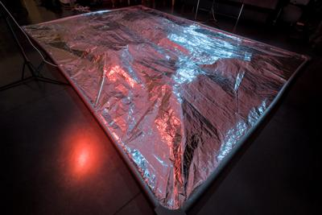
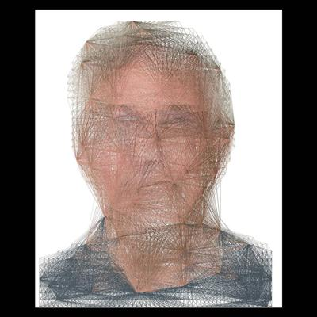
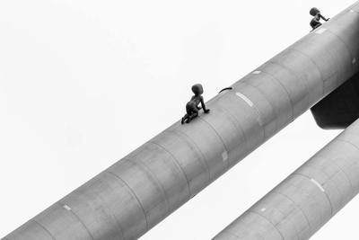

Steve Van Hoyweghen
Works
☰ More
Steve Van Hoyweghen
Works
☰



Installations
Biomorphic Breath #1
Retinal Attack
Photography: Conceptual
Food photography?
The flesh is weak
Light Works
40 Times Myself
Photography: Places
Albania
Antwerp
Belgian Coast
Berlin
Extremadura
French Coast
Ghent
Jökulsárlón
Liège
Lille
Lochristi
Prague
New York
Turkmenistan
Parc de la Villette
Ubud
About
Steve
Prints
Licensing
Contact